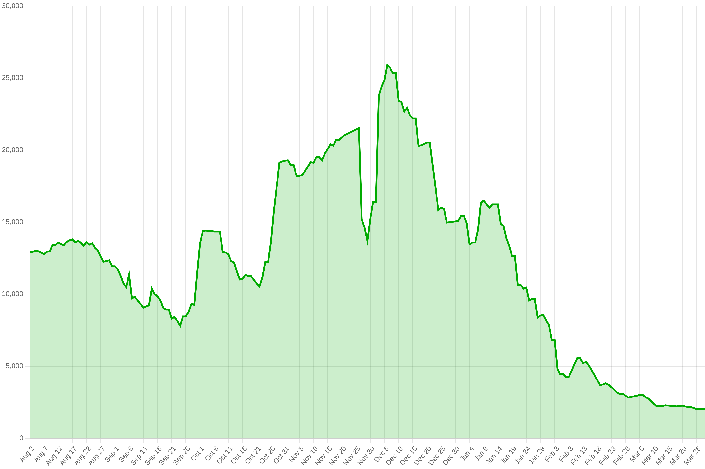
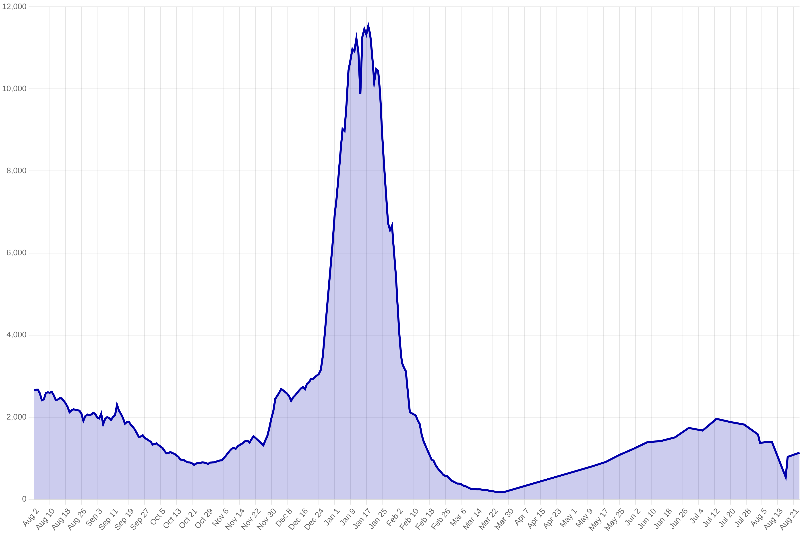
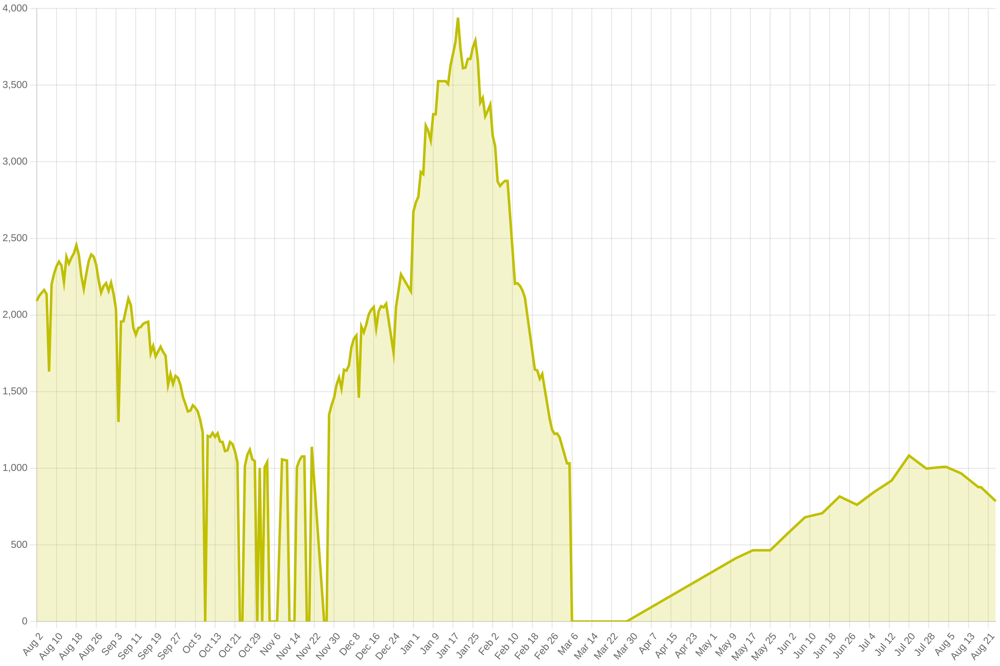
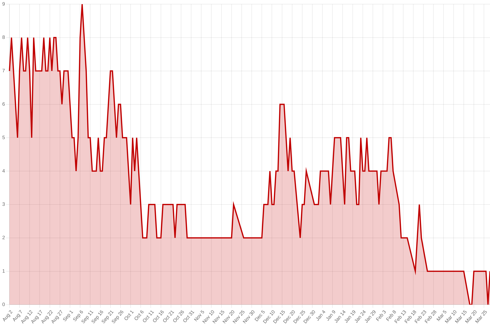

Missouri COVID data
The data on this page was updated Sunday, January 23, 2022. For the values that are averages over 7 days, the start date is Friday, January 14, 2022 and the end date is Thursday, January 20, 2022. The original data comes from the Missouri Department of Health and Senior Services.
Download
This data is available to download as CSV, JSON, or a sqlite database. To read more about the data formats, please check the project README.
| CSV | JSON | sqlite |
Vaccinations
An average of 12,643 vaccine doses have been administered per day for the previous 7 days.
New cases
There have been an average of 10,800 new cases per day for the previous 7 days. This number includes infections confirmed by PCR tests as well as probable cases indicated by antigen tests.
There have been an average of 8,502 new confirmed cases per day for the previous 7 days. These cases are the result of positive PCR tests, which are are more sensitive to the virus and therefore more accurate. However, not everyone receives a PCR test.
There have been an average of 2,298 new suspected cases per day for the previous 7 days. These are the result of positive antigen tests, which are not as sensitive as PCR tests. If someone has a positive antigen test and later receives a positive PCR test, they are removed from the "suspected" count and added to the "confirmed" count.
The positivity rate of PCR tests over the last 7 days is 35.1%, with an average of 25,748 PCR tests administered per day. The positivity rate of antigen tests over the last 7 days is 21.4% with an average of 12,993 antigen tests administered per day.
Outcomes
There are currently 3,738 people hospitalized with COVID-19.
699 people are in intensive care.

Starting January 18, 2022, the Missouri Department of Health and Senior Services no longer reports the number of people on ventilators.
Over the last 7 days, an average of 4 people have died from COVID-19 each day. Note that death reporting can be delayed, so tracking this number over a longer duration will help to understand what is happening in the state.
